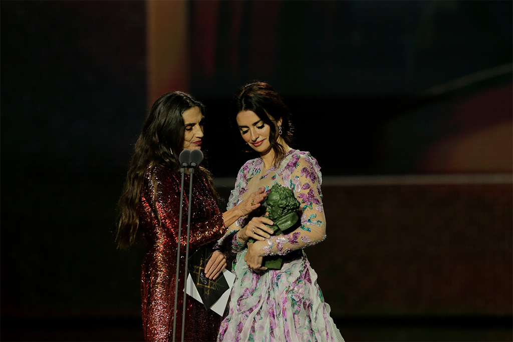

Grandes nombres del cine internacional conectarán en directo con la gala de los Goya 2021
El cine español celebra su gran noche: los Premios Goya se entregarán el sábado, 6 de marzo, en el Teatro del Soho CaixaBank de Málaga, en una gala “obligadamente distinta y extremadamente responsable”. En su treinta y cinco cumpleaños, estos galardones creados para reconocer a los mejores artistas y técnicos de nuestra cinematografía tendrán un formato híbrido, presencial con los conductores de la ceremonia, Antonio Banderas y María Casado, y los intérpretes y cineastas que entregarán los premios; y los 166 nominados de esta edición conectados telemáticamente desde sus casas.
Los Goya 2021, que pondrán en valor a todos los miembros de la industria del cine, especialmente a los que no están delante de las cámaras, pero son esenciales para crear las películas, y harán un reconocimiento al público, contarán con la presencia telemática de grandes nombres del cine internacional. Robert de Niro, Al Pacino, Dustin Hoffman, Helen Mirren, Charlize Theron, Isabelle Huppert, Monica Bellucci, Salma Hayek, Sylvester Stallone, Emma Thompson, Benicio del Toro, Ricardo Darín y Laura Dern son algunos de los más de 30 nombres que saludarán a la audiencia de la gala y lanzarán mensajes de apoyo a nuestra cinematografía desde localizaciones de todo el mundo.
Seguir leyendo [+]